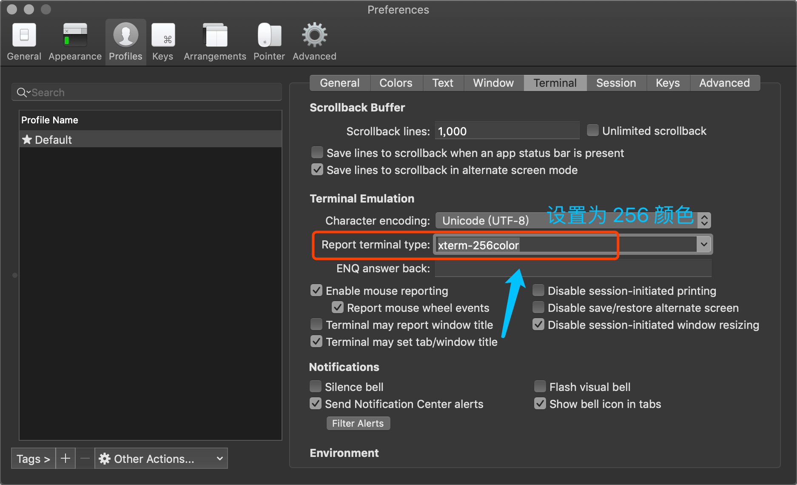
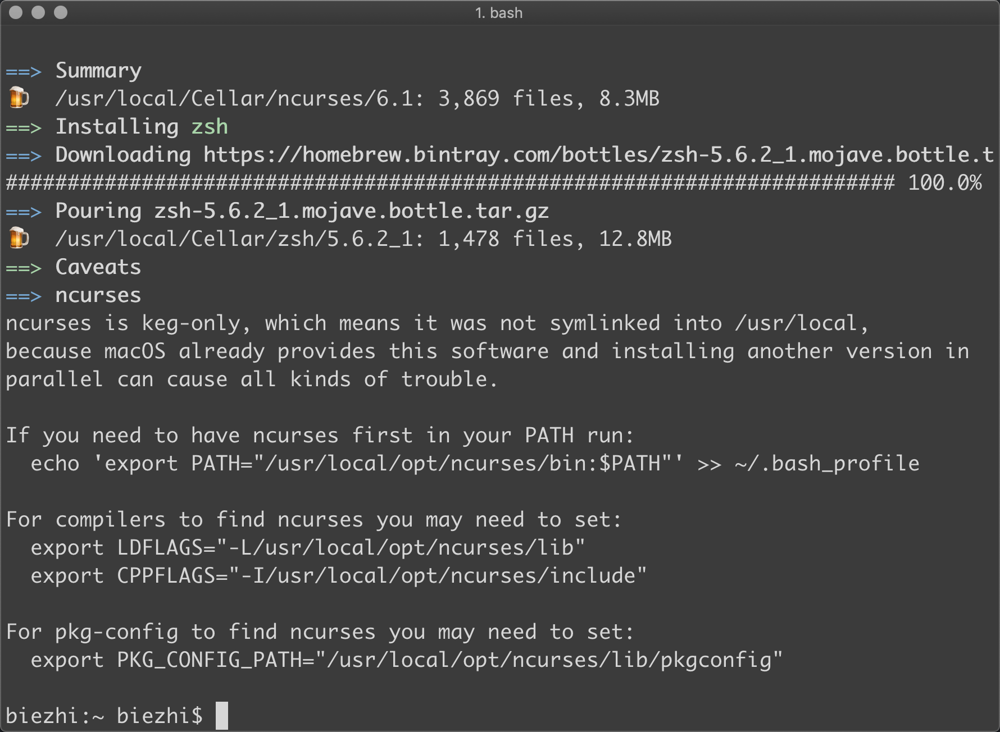

Mac iTerm2的个性主题设置
安装对象
iTerm2：号称 Mac 下最好的终端工具（嗯，我也这么认为，毕竟我不会别的了）
zsh：一款强大的终端工具，能帮助你更高效地编写和执行命令
安装 iTerm2
前提：已经安装了 Homebrew.
如果你从来没有运行过 brew cask 命令，可以先执行：
1 | brew tap caskroom/cask |
然后开始安装 iTerm2
1 | brew cask install iterm2 |
安装成功后在 Launchpad 中可以看到有一个新图标出现，打开 iTerm2
代码配色
默认的界面还是略显丑陋的，我们来设置一下代码配色吧
先检查下终端颜色配置为 xterm-256color，位置在 iTerm2 -> Preferences -> Profiles -> Terminal

然后就可以设置配色了，默认情况下 iTerm2 只有 7 种自带的配色，当然满足不了我们高颜值的需求了.
有人就开源了一款叫 iTerm2-Color-Schemes 的配色合集，里面有各种经典、常用的配色方案.
这里我在Desktop创建了一个iterm2的目录,再来将配色使用 Git 下载到本地.
1 | mkdir iterm2 && cd iterm2 |
下面需要导入配色方案，选择 schemes 文件夹内的所有配色方案

导入成功后就可以选择一些流行的配色方案了，目前使用的是「Bright Lights」.并且把亮度调暗了一点.
安装字体
为什么要安装字体呢？我们电脑的字体其实是可以用的，但是想要图标的这种字体就没法儿了.
图标字体其实是非 ASCII 码字体，在 iTerm2 中可以进行配置，所以先要安装这个字体。这款字体叫 nerd-fonts
使用 brew 安装
1 | brew tap homebrew/cask-fonts |
安装成功后需要在 iTerm2 中配置一下:
在 iTerm2 -> Preferences -> Profiles -> Text -> Font -> Change Font 栏位中，
Text 下面勾选 Use a different font for non-ASCII text，然后在 Non-ASCII font 点击 Change font 修改


这里选择的字体是非 ASCII 码字符的字体，不要设置错了！选择好之后关闭即可
安装 zsh
1 | brew install zsh |

默认的 shell 是 bash，需要修改为 zsh：
1 | sudo sh -c "echo $(which zsh) >> /etc/shells" |
修改时会提示你输入密码.
现在 zsh 安装完成了，安装虽简单，可配置麻烦啊，这你能忍吗？？当然不能！
于是，oh-my-zsh 出现了，有了它 zsh 配置起来就方便多了，来安装一下它
1 | sh -c "$(curl -fsSL https://raw.githubusercontent.com/robbyrussell/oh-my-zsh/master/tools/install.sh)" |

安装好之后可以看到界面发生了一点点变化，同时会产生一个名为 .zshrc 的配置文件，在用户家目录下面，我们以后主要就是修改它了
配置主题
上面看到界面发生变化是因为 oh-my-zsh 默认帮我们配置了一个终端主题，你可以打开 ~/.zshrc 文件看看：
1 | ZSH_THEME="robbyrussell" |
这些主题文件存储在 ~/.oh-my-zsh/themes 目录下，你也可以使用其他的。
为了实现前面想要的酷炫的终端主题，有人写了一个名为 powerlevel9k 的高颜值主题。
先将主题下载到本地的主题目录中：
1 | git clone https://github.com/bhilburn/powerlevel9k.git ~/.oh-my-zsh/custom/themes/powerlevel9k |
然后修改 zsh 主题配置：
1 | ZSH_THEME="powerlevel9k/powerlevel9k" |
- POWERLEVEL9K_MODE：设置 powerlevel9k 的字体是我们前面下载的
- POWERLEVEL9K_LEFT_PROMPT_ELEMENTS：将前面居右的几个元素放在左边了
- POWERLEVEL9K_RIGHT_PROMPT_ELEMENTS：右边不放置任何元素（如果你喜欢在右边也可以加）
- POWERLEVEL9K_PROMPT_ADD_NEWLINE：在每个提示之前添加换行符
修改配置文件后一定要记得让配置生效，使用 source 命令：
1 | source ~/.zshrc |
现在来看看终端变成什么样子了！
大功告成！！！
踩的坑
安装了oh-my-zsh插件后发现之前在.bash_profile自定义的一些内容都失效了,hexo无法启动报错
1 | zsh: command not found: hexo |
问题分析:
oh-my-zsh有自己的配置文件，覆盖了.bash_profile的内容
解决方法:
1 | vi ~/.zshrc |
在最后一行加入
1 | source ~/.bash_profile |
这样就可以”继承”.bash_profile的配置了
执行source ~/.zshrc，让配置生效，重新使用，一切OK！